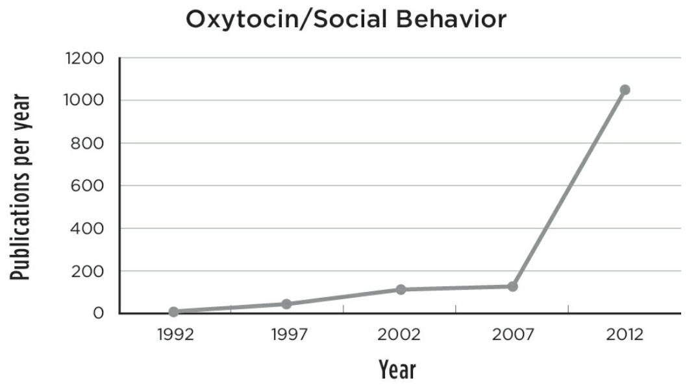
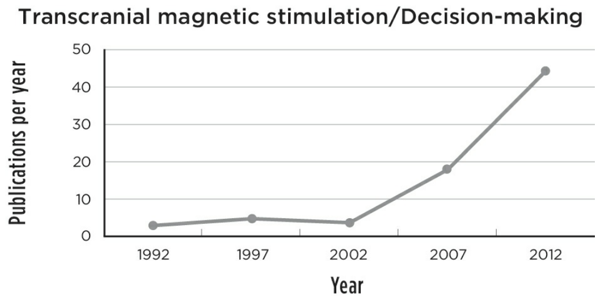
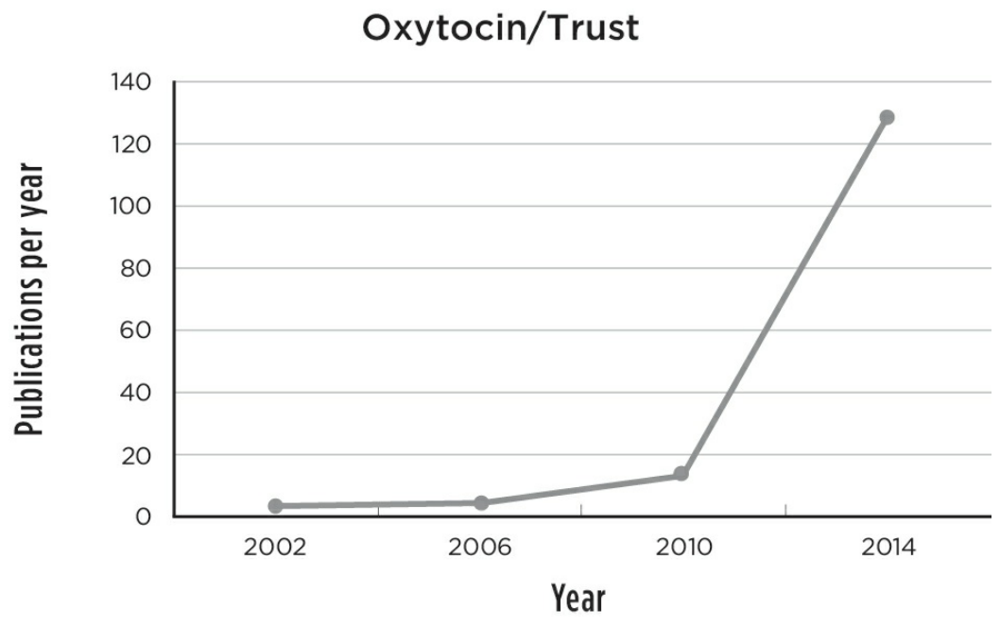
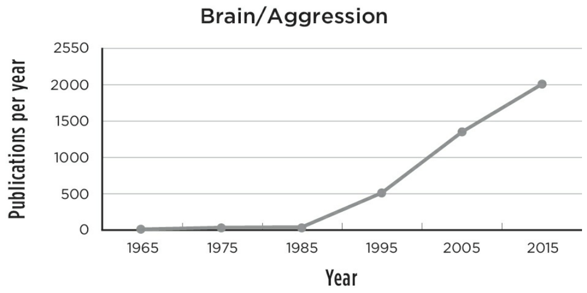
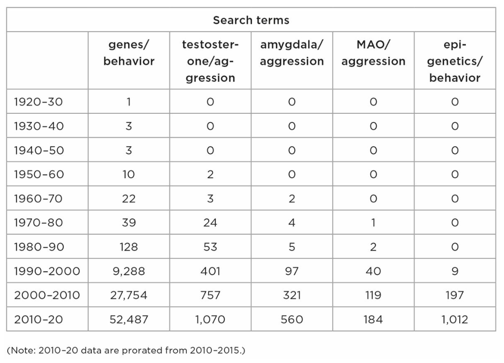

Chương 16 — Sinh học, hệ thống tư pháp hình sự, và (ôi, tại sao không nhỉ?) Ý chí tự do
Mười sáu
Sinh học, Hệ thống Tư pháp Hình sự, và (Ồ,
Tại sao không nhỉ?) Ý chí Tự do*
ĐỪNG QUÊN KIỂM TRA TUYẾN LỆ CỦA HỌ
C
ách đây vài năm, một quỹ tài trợ đã gửi thư cho nhiều người để kêu gọi những Ý tưởng Lớn cho một sáng kiến tài trợ của họ. Bức thư viết đại ý là: “Hãy gửi cho chúng tôi một ý tưởng táo bạo, thứ mà bạn sẽ không bao giờ dám đề xuất với một quỹ nào khác vì họ sẽ dán nhãn bạn là kẻ điên.”
Nghe thú vị đấy. Thế là tôi gửi cho họ một đề xuất có tựa đề: “Có nên xóa bỏ Hệ thống Tư pháp Hình sự không?” Tôi lập luận rằng câu trả lời là có, rằng khoa học thần kinh cho thấy hệ thống này hoàn toàn vô nghĩa và họ nên tài trợ cho một sáng kiến để thực hiện điều đó.
“Ha-ha,” họ nói. “Chà, chính chúng tôi đã yêu cầu điều đó mà. Đề xuất đó chắc chắn đã thu hút sự chú ý của chúng tôi. Đó là một ý tưởng tuyệt vời để tập trung vào sự tương tác giữa khoa học thần kinh và luật pháp. Hãy tổ chức một hội nghị đi.”
Thế là tôi đến dự một hội nghị cùng với một số nhà khoa học thần kinh và một số người làm luật — các giáo sư luật, thẩm phán và nhà tội phạm học. Chúng tôi học thuật ngữ của nhau, chẳng hạn như thấy được cách giới khoa học thần kinh chúng tôi và giới luật sử dụng các từ “có thể” (possible), “có khả năng” (probable) và “chắc chắn” (certainty) khác nhau ra sao. Chúng tôi phát hiện ra rằng hầu hết các nhà khoa học thần kinh, bao gồm cả tôi, chẳng biết gì về cách vận hành của thế giới pháp lý, và hầu hết giới luật đều tránh né khoa học kể từ khi bị sang chấn tâm lý bởi môn sinh học lớp chín. Bất chấp vấn đề hai nền văn hóa đó, đủ mọi sự hợp tác đã bắt đầu từ đó, và cuối cùng phát triển thành một mạng lưới những người nghiên cứu về “luật học thần kinh” (neurolaw).
Vui vẻ, kích thích trí tuệ, một sự lai tạo liên ngành đầy sức sống. Và cũng gây bực bội cho tôi, bởi vì tôi thực sự có ý nghiêm túc với cái tựa đề đề xuất mà tôi đã viết. Hệ thống tư pháp hình sự hiện tại cần phải bị xóa bỏ và thay thế bằng một thứ gì đó mà tuy có một số nét chung rộng lớn với hệ thống hiện tại,* nhưng lại có những nền tảng hoàn toàn khác biệt. Đó là điều tôi sẽ cố gắng thuyết phục bạn. Và đó mới chỉ là phần đầu của chương này thôi.
— Không có gì ít gây tranh cãi hơn việc tuyên bố rằng hệ thống tư pháp hình sự cần cải cách và việc này nên bao gồm nhiều khoa học hơn và ít giả khoa học hơn trong phòng xử án. Nếu không vì điều gì khác, hãy cân nhắc điều này: theo Innocence Project (Dự án Vô tội), gần 350 người, trong đó có con số gây choáng váng là 20 người đang chờ thi hành án tử hình, bị giam giữ trung bình mười bốn năm, đã được minh oan nhờ xét nghiệm dấu vân tay DNA.1
Mặc dù vậy, tôi sẽ chủ yếu bỏ qua vấn đề cải cách tư pháp hình sự bằng khoa học. Dưới đây là một số chủ đề nóng bỏng trong lĩnh vực đó mà tôi sẽ bỏ qua hoàn toàn:
Phải làm gì với sức mạnh và sự phổ biến của những thiên kiến ngầm tự động (implicit biases) (dẫn đến việc, chẳng hạn, bồi thẩm đoàn đưa ra các phán quyết khắc nghiệt hơn đối với các bị cáo người Mỹ gốc Phi có làn da sẫm màu hơn). Liệu Bài kiểm tra Liên tưởng Ngầm (Implicit Association Tests) có nên được sử dụng trong việc chọn bồi thẩm đoàn để loại bỏ những người có thiên kiến mạnh mẽ và liên quan hay không? Liệu thông tin chẩn đoán hình ảnh thần kinh về não bộ của bị cáo có nên được chấp nhận làm bằng chứng tại tòa án hay không.2 Điều này đã trở nên ít gây tranh cãi hơn khi chẩn đoán hình ảnh thần kinh chuyển từ một phương pháp mang tính cách mạng thành một công cụ tiêu chuẩn trong bộ đồ nghề của khoa học. Nhưng vẫn còn vấn đề liệu bồi thẩm đoàn có nên được xem các hình ảnh thần kinh thực tế hay không — nỗi lo ngại là những người không chuyên dễ bị ấn tượng quá mức bởi những bức ảnh não bộ đầy màu sắc bắt mắt được tăng cường độ nét
(hóa ra điều này ít nghiêm trọng hơn so với lo ngại ban đầu). Liệu dữ liệu hình ảnh thần kinh về tính trung thực của một người có chỗ đứng trong phòng xử án (hoặc tại nơi làm việc liên quan đến thẩm tra an ninh) hay không. Về cơ bản, tôi không biết bất kỳ chuyên gia nào cho rằng kỹ thuật này đủ chính xác. Tuy nhiên, vẫn có những doanh nhân bán phương pháp này (bao gồm, tôi không đùa đâu, một công ty tên là No Lie MRI). Vấn đề này mở rộng sang các phiên bản công nghệ thấp hơn nhưng cũng kém tin cậy không kém của câu hỏi “bộ não đó có đang nói dối không?”. Điều này bao gồm cả điện não đồ (EEG), thứ được chấp nhận làm bằng chứng tại các tòa án Ấn Độ.3
Ngưỡng IQ nên là bao nhiêu để một người đủ thông minh cho việc bị tử hình? Tiêu chuẩn là chỉ số IQ từ 70 trở lên, và cuộc tranh luận xoay quanh việc đó nên là mức trung bình 70 qua nhiều bài kiểm tra IQ, hay chỉ cần đạt được con số kỳ diệu đó dù chỉ một lần là đủ điều kiện để bị tử hình. Vấn đề này liên quan đến khoảng 20 phần trăm số người đang chờ thi hành án tử hình.4
Phải làm gì với thực tế là các phát hiện khoa học có thể tạo ra những loại thiên kiến nhận thức mới ở các bồi thẩm viên. Ví dụ, niềm tin rằng tâm thần phân liệt là một rối loạn sinh học khiến bồi thẩm viên ít có khả năng kết tội người mắc tâm thần phân liệt về hành động của họ hơn, nhưng lại có nhiều khả năng coi họ là những kẻ nguy hiểm không thể chữa khỏi hơn.5
Hệ thống pháp luật phân biệt giữa suy nghĩ và hành động; phải làm gì khi khoa học thần kinh ngày càng tiết lộ nhiều hơn về suy nghĩ. Liệu chúng ta có đang tiến gần đến việc phát hiện tiền tội phạm (precrime detection), dự đoán ai sẽ phạm tội hay không? Theo lời của một chuyên gia: “Chúng ta sẽ phải đưa ra quyết định về hộp sọ như một vùng riêng tư.”6
Và tất nhiên còn có vấn đề các thẩm phán xét xử khắc nghiệt hơn khi bụng họ đang kêu cồn cào.*7
— Tất cả những vấn đề này đều quan trọng, và tôi nghĩ các cải cách là cần thiết tại giao điểm của chính trị tiến bộ, quyền tự do dân sự và các tiêu chuẩn khắt khe về khoa học mới. Nói cách khác, một chương trình nghị sự tự do (liberal) tiêu chuẩn. Phần lớn thời gian tôi là một người theo chủ nghĩa tự do rập khuôn chính hiệu; tôi thậm chí còn thuộc cả nhạc hiệu của nhiều chương trình trên đài NPR. Tuy nhiên, chương này sẽ không đi theo bất kỳ hướng nào giống với cách tiếp cận tự do để cải cách tư pháp hình sự. Lý do tại sao được tóm tắt trong ví dụ sau đây về một cách tiếp cận tự do cổ điển đối với một vấn đề pháp lý.
Thời điểm là giữa những năm 1500. Có lẽ vì các tiêu chuẩn xã hội lỏng lẻo và con người trở nên suy đồi và/hoặc trụy lạc về mặt đạo đức, châu Âu tràn ngập phù thủy. Đó là một vấn đề khổng lồ — người dân sợ ra đường vào ban đêm; các cuộc thăm dò cho thấy nông dân ngoài đường liệt kê “phù thủy” là mối đe dọa lớn hơn cả “dịch hạch” hay “người Ottoman”; những kẻ muốn làm bạo chúa thu hút người ủng hộ bằng cách thề sẽ mạnh tay với phù thủy.
May mắn thay, có ba tiêu chuẩn pháp lý để quyết định xem một người có phạm tội làm phù thủy hay không:8
Thử nghiệm nổi trên mặt nước. Vì phù thủy từ chối bí tích rửa tội, nước sẽ từ chối cơ thể họ. Trói bị cáo lại và ném xuống nước. Nếu họ nổi, họ là phù thủy. Nếu họ chìm, họ vô tội. Nhanh lên nào, vớt người vô tội lên ngay. Thử nghiệm dấu ấn của quỷ. Ác quỷ xâm nhập vào cơ thể một người để truyền nhiễm bản chất phù thủy cho họ, và điểm xâm nhập đó sẽ mất cảm giác đau. Hãy làm điều gì đó gây đau đớn một cách có hệ thống lên mọi vị trí trên cơ thể bị cáo. Nếu có điểm nào ít nhạy cảm với cơn đau hơn hẳn phần còn lại, bạn đã tìm thấy dấu ấn của quỷ và xác định được một phù thủy. Thử nghiệm nước mắt. Kể cho bị cáo nghe câu chuyện về sự đóng đinh của Chúa chúng ta. Bất kỳ ai không xúc động đến rơi nước mắt đều là phù thủy.
Những tiêu chí đã được thiết lập vững chắc này cho phép chính quyền chống lại làn sóng phù thủy này xác định và trừng phạt thích đáng hàng ngàn phù thủy.
Năm 1563, một bác sĩ người Hà Lan tên là Johann Weyer đã xuất bản một cuốn sách, De Praestigiis Daemonum, ủng hộ việc cải cách hệ thống tư pháp xử phù thủy. Tất nhiên, ông thừa nhận sự tồn tại độc ác của phù thủy, sự cần thiết phải trừng phạt họ nghiêm khắc, và tính phù hợp nói chung của các kỹ thuật chống phù thủy như ba bài kiểm tra kia.
Tuy nhiên, Weyer đã đưa ra một lưu ý quan trọng liên quan đến các nữ phù thủy lớn tuổi. Đôi khi, ông lưu ý, người lớn tuổi, đặc biệt là phụ nữ, bị teo tuyến lệ, khiến họ không thể khóc ra nước mắt. Ồ không — điều này làm dấy lên bóng ma kết án oan người ta là phù thủy. Ông Weyer đầy quan tâm và đồng cảm đã khuyên bảo: “Hãy chắc chắn rằng bạn không thiêu sống một bà lão tội nghiệp nào đó chỉ vì tuyến lệ của bà ấy không còn hoạt động nữa.”
Đấy, đó là một cuộc cải cách tự do đối với hệ thống tư pháp xử phù thủy, áp đặt một số suy nghĩ đúng đắn vào một góc nhỏ xíu của một công trình phi lý. Giống hệt như những gì mà việc cải cách dựa trên khoa học đối với hệ thống hiện tại của chúng ta đang làm, và đó là lý do tại sao cần một thứ gì đó cực đoan hơn nhiều.*
BA GÓC NHÌN
H
ãy đi thẳng vào vấn đề. Có ba cách nhìn nhận vị trí của sinh học trong việc lý giải các hành vi của chúng ta, dù là tội phạm hay không:
1. Chúng ta có hoàn toàn ý chí tự do trong hành vi của mình. 2. Chúng ta hoàn toàn không có. 3. Đâu đó ở khoảng giữa.
Nếu buộc mọi người phải đi đến tận cùng logic trong quan điểm của họ, có lẽ chưa đến một phần nghìn của một phần trăm sẽ ủng hộ mệnh đề đầu tiên. Giả sử một người đang co giật vì cơn động kinh lớn (grand mal), vung tay loạn xạ và đánh trúng ai đó. Nếu bạn thực sự tin rằng chúng ta kiểm soát hành vi một cách tự do, bạn phải kết tội họ về hành vi hành hung.
Hầu như ai cũng coi điều đó là vô lý. Thế nhưng kết cục pháp lý đó đã từng xảy ra cách đây nửa thiên niên kỷ ở phần lớn châu Âu.9 Điều đó có vẻ nực cười bởi vì trong vài thế kỷ qua, phương Tây đã bước qua một lằn ranh và bỏ nó lại phía sau xa đến mức một thế giới ở phía bên kia là điều không thể tưởng tượng nổi. Chúng ta đón nhận một khái niệm định nghĩa sự tiến bộ của mình — “Không phải tại anh ta. Tại căn bệnh của anh ta.” Nói cách khác, đôi khi sinh học có thể áp đảo bất cứ thứ gì giống với ý chí tự do. Người phụ nữ này không cố tình va vào bạn một cách ác ý; bà ấy bị mù. Người lính đứng trong đội hình này không ngất đi vì thiếu bản lĩnh; anh ta bị tiểu đường và cần insulin. Người phụ nữ này không phải là kẻ vô tâm vì đã không giúp người già bị ngã; cô ấy bị liệt do chấn thương tủy sống. Những thay đổi tương tự trong nhận thức về trách nhiệm hình sự cũng đã xảy ra ở các lĩnh vực khác. Ví dụ, từ hai đến bảy thế kỷ trước, việc truy tố động vật, đồ vật và xác chết bị cho là đã cố ý làm hại ai đó là chuyện bình thường. Một số phiên tòa trong số này mang một sắc thái hiện đại kỳ lạ — trong một phiên tòa năm 1457 xét xử một con lợn nái và đàn lợn con của nó vì tội ăn thịt một đứa trẻ, con lợn mẹ đã bị kết án và xử tử, trong khi đàn lợn con được phán quyết là quá nhỏ để phải chịu trách nhiệm cho hành vi của mình. Không rõ vị thẩm phán có viện dẫn trạng thái trưởng thành của vỏ não trán của chúng hay không.
Do đó, hầu như không ai tin rằng chúng ta có quyền kiểm soát hoàn toàn có ý thức đối với hành vi của mình, rằng sinh học không bao giờ ràng buộc chúng ta. Chúng ta sẽ bỏ qua lập trường này mãi mãi về sau.
VẼ NHỮNG LẰN RANH TRÊN CÁT
H
ầu như tất cả mọi người đều tin vào mệnh đề thứ ba, rằng chúng ta nằm ở đâu đó giữa có hoàn toàn và không có chút ý chí tự do nào, rằng khái niệm ý chí tự do này tương thích với các định luật tất định của vũ trụ được thể hiện qua sinh học. Chỉ một tập hợp con trong các phiên bản của quan điểm này khớp với lập trường triết học khá hẹp gọi là “thuyết tương thích” (compatibilism). Thay vào đó, quan điểm rộng hơn này cho rằng chúng ta có một thứ gì đó giống như tinh thần, linh hồn, một bản chất thể hiện ý chí tự do của chúng ta, từ đó phát sinh ra ý định hành vi; và tinh thần này cùng tồn tại với sinh học, thứ đôi khi có thể ràng buộc nó. Đó là một dạng nhị nguyên luận tự do (“tự do” theo nghĩa triết học chứ không phải nghĩa chính trị), thứ mà Greene gọi là “ý chí tự do có giới hạn” (mitigated free will). Nó được gói gọn trong ý tưởng rằng một tinh thần có thiện chí, dù rất muốn, vẫn có thể bị cản trở bởi thể xác quá đỗi yếu đuối.
— Hãy bắt đầu với khung pháp lý kinh điển nhất về ý chí tự do có giới hạn.
Năm 1842, một người Scotland tên là Daniel M’Naghten đã tìm cách ám sát Thủ tướng Anh Robert Peel.10 Ông ta nhầm thư ký riêng của Peel là Edward Drummond với thủ tướng và bắn ông này ở cự ly gần, khiến ông tử vong. Tại phiên luận tội, M’Naghten tuyên bố: “Đảng Bảo thủ (Tories) ở quê hương tôi đã ép buộc tôi phải làm điều này. Họ theo dõi và bức hại tôi bất cứ nơi nào tôi đi, và đã hủy hoại hoàn toàn sự bình yên trong tâm trí tôi. Họ theo tôi sang Pháp, vào Scotland . . . bất cứ nơi nào tôi đến. Tôi không thể nào yên ổn với họ cả ngày lẫn đêm. Đêm tôi không tài nào ngủ được. . . . Tôi tin rằng họ đã đẩy tôi vào bệnh lao phổi. Tôi chắc chắn mình sẽ không bao giờ còn là con người như trước đây nữa. . . . Họ muốn sát hại tôi. Điều đó có thể chứng minh bằng bằng chứng. . . . Tôi đã bị đẩy đến bước đường cùng bởi sự bức hại.”
Theo thuật ngữ ngày nay, M’Naghten mắc một dạng rối loạn tâm thần hoang tưởng nào đó. Có thể không phải tâm thần phân liệt — các triệu chứng hoang tưởng của ông bắt đầu muộn hơn nhiều năm so với độ tuổi khởi phát điển hình của căn bệnh này. Bất kể chẩn đoán là gì, M’Naghten đã bỏ bê công việc kinh doanh và dành hai năm trước đó lang thang khắp châu Âu, nghe thấy những giọng nói, tin chắc rằng mình đang bị theo dõi và bức hại bởi những kẻ quyền lực, với Peel là kẻ hành hạ tàn ác nhất. Theo lời một bác sĩ làm chứng về sự mất trí của ông: “Sự hoang tưởng mạnh đến mức không gì ngoài một rào cản vật lý có thể ngăn ông ta thực hiện hành vi [tức là giết người].” M’Naghten rõ ràng bị suy giảm nhận thức đến mức bên công tố đã rút lại các cáo buộc hình sự, đồng ý với bên bào chữa rằng ông ta bị mất trí. Bồi thẩm đoàn đồng ý, và M’Naghten đã sống phần đời còn lại trong các bệnh viện tâm thần, được đối xử khá tốt theo tiêu chuẩn thời bấy giờ.
Đã có những tiếng la ó phản đối dữ dội sau quyết định của bồi thẩm đoàn, từ người dân ngoài phố cho đến Nữ hoàng Victoria — M’Naghten đã giết người mà không bị trừng phạt. Vị thẩm phán chủ tọa bị Quốc hội chất vấn gắt gao và vẫn bảo vệ quyết định của mình. Cơ quan tương đương với Tòa án Tối cao được Quốc hội giao nhiệm vụ đánh giá vụ án và đã ủng hộ ông. Và từ phán quyết đó đã ra đời sự chính thức hóa của thứ hiện nay là tiêu chí phổ biến để tuyên bố một người vô tội vì lý do mất trí, cụ thể là “quy tắc M’Naghten”: nếu tại thời điểm phạm tội, người đó “đang chịu đựng một sự khiếm khuyết về lý trí do bệnh lý của tâm trí”, đến mức không thể phân biệt được đúng sai.*
Quy tắc M’Naghten là cốt lõi giúp John Hinckley Jr. được tuyên bố vô tội vì lý do mất trí trong vụ mưu sát Tổng thống Reagan năm 1981, được đưa vào bệnh viện thay vì ngồi tù. Đã có sự phẫn nộ đáng kể kiểu “Hắn ta thoát tội rồi” sau đó; một số bang đã cấm tiêu chí M’Naghten, và Quốc hội về cơ bản đã cấm nó đối với các vụ án liên bang bằng Đạo luật Cải cách Bào chữa Mất trí năm 1984.* Tuy nhiên, lập luận đằng sau quy tắc M’Naghten nhìn chung đã đứng vững trước thử thách của thời gian.
Đây chính là bản chất của lập trường ý chí tự do có giới hạn — con người cần phải chịu trách nhiệm về hành động của mình, nhưng việc bị rối loạn tâm thần rầm rộ có thể là một tình tiết giảm nhẹ. Đó là ý tưởng rằng có thể có trách nhiệm “giảm nhẹ” đối với hành động của chúng ta, rằng một việc gì đó có thể là bán tự nguyện.
Đây là cách tôi luôn hình dung về ý chí tự do có giới hạn: Có bộ não — các tế bào thần kinh, khớp thần kinh, chất dẫn truyền thần kinh, thụ thể, các yếu tố phiên mã đặc hiệu cho não, hiệu ứng biểu sinh, sự chuyển vị gen trong quá trình hình thành tế bào thần kinh mới. Các khía cạnh chức năng não có thể bị ảnh hưởng bởi môi trường tiền sản của một người, gen và hormone, việc cha mẹ họ có uy quyền hay văn hóa của họ có bình đẳng không, việc họ có chứng kiến bạo lực thời thơ ấu không, và việc họ ăn sáng lúc mấy giờ. Đó là toàn bộ mọi thứ, toàn bộ cuốn sách này.
Và sau đó, tách biệt khỏi tất cả những thứ đó, trong một hầm bê tông giấu kín trong não, ngồi một người đàn ông nhỏ bé (hoặc phụ nữ, hoặc cá nhân phi giới tính), một tiểu nhân (homunculus) bên bảng điều khiển. Tiểu nhân này được tạo nên từ một hỗn hợp gồm chip nano, ống chân không cũ kỹ, giấy da cổ nhăn nheo, những nhũ đá kết tinh từ giọng nói răn dạy của mẹ bạn, những vệt lưu huỳnh, và những chiếc đinh tán làm từ sự gan dạ. Nói cách khác, không phải thứ chất não sinh học nhầy nhụa kinh tởm kia.
Và tiểu nhân ngồi đó điều khiển hành vi. Có một số thứ nằm ngoài tầm kiểm soát của nó — các cơn động kinh làm nổ cầu chì của tiểu nhân, buộc nó phải khởi động lại hệ thống và kiểm tra các tệp bị hỏng. Tương tự với rượu, bệnh Alzheimer, tủy sống bị đứt, sốc hạ đường huyết.
Có những lĩnh vực mà tiểu nhân và thứ sinh học não bộ kia đã đạt được một thỏa thuận hòa hoãn — ví dụ, sinh học thường tự động điều hòa nhịp thở của bạn, trừ khi bạn phải hít một hơi thật sâu trước khi hát một bản aria, trong trường hợp đó tiểu nhân tạm thời ghi đè lên chế độ lái tự động.
Nhưng ngoài ra, tiểu nhân tự đưa ra quyết định. Chắc chắn rồi, nó ghi chép cẩn thận mọi tín hiệu đầu vào và thông tin từ não, kiểm tra mức hormone của bạn, đọc lướt các tạp chí sinh học thần kinh, cân nhắc tất cả, và rồi, sau khi suy ngẫm và cân nhắc kỹ lưỡng, nó quyết định bạn sẽ làm gì. Một tiểu nhân nằm trong não bạn, nhưng không thuộc về não bạn, vận hành độc lập với các quy luật vật chất của vũ trụ vốn cấu thành nên khoa học hiện đại.
Đó chính là bản chất của ý chí tự do có giới hạn. Tôi thấy những người cực kỳ thông minh giật mình lùi lại trước hình ảnh này và cố gắng phản bác sự cực đoan của bức tranh này thay vì chấp nhận tính đúng đắn cơ bản của nó: “Anh đang dựng lên một tiểu nhân rơm, ám chỉ rằng tôi nghĩ ngoại trừ những thứ như động kinh hay chấn thương não, chúng ta đang đưa ra mọi quyết định một cách tự do. Không, không, ý chí tự do của tôi mềm mỏng hơn nhiều và ẩn nấp quanh rìa của sinh học, chẳng hạn như khi tôi tự do quyết định hôm nay mang đôi tất nào.” Nhưng tần suất hay tầm quan trọng mà ý chí tự do thể hiện không thành vấn đề. Ngay cả khi 99,99 phần trăm hành động của bạn được quyết định bởi sinh học (theo nghĩa rộng nhất của cuốn sách này), và chỉ một lần trong một thập kỷ bạn tuyên bố rằng mình đã chọn bằng “ý chí tự do” việc dùng chỉ nha khoa từ trái sang phải thay vì ngược lại, thì bạn đã ngầm viện dẫn đến một tiểu nhân vận hành bên ngoài các quy luật khoa học.
Đây là cách hầu hết mọi người dung hòa sự cùng tồn tại giả định giữa ý chí tự do và các ảnh hưởng sinh học lên hành vi.* Đối với họ, gần như mọi cuộc thảo luận đều quy về việc tìm xem tiểu nhân giả định của chúng ta nên và không nên được kỳ vọng có khả năng làm gì. Để cảm nhận rõ hơn, hãy cùng xem xét một số cuộc tranh luận này.
Tuổi tác, Sự trưởng thành của Nhóm, Sự trưởng thành của Cá nhân
Trong phán quyết Roper kiện Simmons năm 2005, Tòa án Tối cao phán quyết rằng bạn không thể tử hình một người vì tội ác mà họ phạm phải trước tuổi mười tám. Lập luận thích đáng được lấy thẳng từ chương 6 và chương 7: não bộ, đặc biệt là vỏ não trán, vẫn chưa đạt đến mức độ trưởng thành của người lớn về khả năng điều tiết cảm xúc và kiểm soát xung động. Nói cách khác, thanh thiếu niên, với bộ não thanh thiếu niên của mình, không có mức độ phạm lỗi như người lớn. Lập luận này giống hệt lý do tại sao con lợn mẹ bị xử tử còn đàn lợn con thì không.
Trong những năm sau đó, đã có những phán quyết liên quan. Trong vụ Graham kiện Florida năm 2010 và Miller kiện Alabama năm 2012, Tòa án nhấn mạnh rằng tội phạm vị thành niên có tiềm năng cải tạo cao nhất (vì bộ não vẫn đang phát triển của chúng) và do đó cấm án tù chung thân không ân xá đối với họ.
Những quyết định này đã châm ngòi cho một số cuộc tranh luận:
Chỉ vì thanh thiếu niên, xét trên mức trung bình, kém trưởng thành hơn người lớn về mặt sinh học thần kinh và hành vi không loại trừ khả năng một số cá nhân thanh thiếu niên lại trưởng thành tương đương, và do đó hoàn toàn phù hợp để áp dụng các tiêu chuẩn trách nhiệm hình sự của người lớn. Liên quan đến điều đó là sự phi lý hiển nhiên khi ngụ ý rằng có một điều gì đó kỳ diệu về mặt sinh học thần kinh xảy ra vào buổi sáng sinh nhật lần thứ mười tám của một người, ban cho họ khả năng tự chủ của người lớn. Phản hồi thông thường cho những điểm này là, đúng, những điều này đúng, nhưng luật pháp thường dựa vào các thuộc tính cấp nhóm với những ranh giới tuổi tác tùy tiện (ví dụ: độ tuổi được phép bầu cử, uống rượu hoặc lái xe). Có sự chấp nhận này bởi vì bạn không thể kiểm tra từng thiếu niên mỗi năm, mỗi tháng, mỗi giờ để xác định xem chúng đã đủ trưởng thành để, chẳng hạn, đi bầu cử hay chưa. Nhưng điều đó lại đáng làm khi xét đến một kẻ giết người tuổi thiếu niên. Ở một góc nhìn trái chiều khác, vấn đề không phải là liệu một người mười bảy tuổi có trưởng thành bằng một người lớn hay không mà là liệu họ có đủ trưởng thành hay không. Sandra Day O’Connor, trong ý kiến bất đồng với phán quyết Roper, đã viết: “Thực tế là người vị thành niên nhìn chung ít phải chịu trách nhiệm về hành vi sai trái của mình hơn người lớn không nhất thiết có nghĩa là một kẻ giết người 17 tuổi không thể có đủ trách nhiệm để đáng bị tử hình” (nhấn mạnh của bà). Một thẩm phán bất đồng quan điểm khác, cố thẩm phán Antonin Scalia, viết rằng thật “vô lý khi nghĩ rằng một người phải đủ trưởng thành để lái xe cẩn thận, uống rượu có trách nhiệm, hoặc bầu cử thông minh, thì mới đủ trưởng thành để hiểu rằng giết hại một con người khác là sai trái sâu sắc.”11
Giữa những ý kiến khác biệt này, tất cả mọi người, bao gồm cả O’Connor và Scalia, đều đồng ý rằng tồn tại những ranh giới liên quan đến tuổi tác đối với ý chí tự do — tiểu nhân của mỗi người từng có thời quá trẻ để có được sức mạnh của người lớn.12 Có lẽ nó chưa đủ cao để với tới tất cả các núm điều khiển; có lẽ nó bị phân tâm khỏi công việc vì lo lắng về cái mụn ghê tởm trên trán. Và điều đó cần được xem xét trong các phán quyết pháp lý. Cũng giống như lợn con và lợn mẹ, đó chỉ là vấn đề khi nào một tiểu nhân đủ tuổi trưởng thành.
Bản chất và Mức độ Tổn thương Não
Về cơ bản, tất cả những người làm việc với mô hình ý chí tự do có giới hạn đều chấp nhận rằng nếu có đủ tổn thương não, trách nhiệm đối với một hành vi phạm tội sẽ biến mất. Ngay cả Stephen Morse thuộc Đại học Pennsylvania, một nhà phê bình gay gắt việc đưa khoa học thần kinh vào phòng xử án (sẽ nói kỹ hơn sau), cũng thừa nhận: “Giả sử chúng ta có thể chứng minh rằng các trung tâm suy xét bậc cao trong não dường như bị vô hiệu hóa trong những trường hợp này. Nếu đây là những người không thể kiểm soát các cơn phi lý trí nghiêm trọng, chúng ta đã biết được điều gì đó có thể liên quan đến việc quy kết trách nhiệm pháp lý.”13 Theo quan điểm này, các yếu tố sinh học giảm nhẹ chỉ có liên quan nếu khả năng suy luận bị suy giảm nghiêm trọng.
Do đó, nếu một người bị phá hủy toàn bộ vỏ não trán, bạn có lẽ không nên bắt họ chịu trách nhiệm về hành động của mình, bởi vì lý trí của họ bị suy giảm nghiêm trọng khi quyết định hướng hành động của bản thân.14 Nhưng vấn đề sau đó trở thành ranh giới được vẽ ở đâu trên một phổ liên tục — nếu 99 phần trăm vỏ não trán bị phá hủy thì sao? Nếu 98 phần trăm thì sao? Điều này có tầm quan trọng thực tiễn rất lớn, vì một tỷ lệ lớn các tử tù có tiền sử tổn thương vỏ não trán, đặc biệt là loại gây tàn phế nhất, tức là xảy ra từ sớm trong đời.
Nói cách khác, giữa những ý kiến khác nhau về nơi vẽ ranh giới, những người tin vào ý chí tự do có giới hạn đều đồng ý rằng lượng tổn thương não khổng lồ sẽ áp đảo một tiểu nhân, trong khi nó nên được kỳ vọng là có thể xoay xở được ít nhất một mức độ tổn thương nào đó.
Trách nhiệm ở Cấp độ Não bộ và ở Cấp độ Xã hội
Nhà khoa học thần kinh lừng danh Michael Gazzaniga, một trong những cây đại thụ và bậc trưởng lão hàng đầu của ngành, đã đi theo một con đường cực kỳ kỳ lạ khi viết: “Ý chí tự do là một ảo ảnh, nhưng bạn vẫn phải chịu trách nhiệm về hành động của mình.” Điều này được diễn giải dài dòng trong một cuốn sách đầy thách thức của ông, Who’s in Charge? Free Will and the Science of the Brain (Ai đang nắm quyền? Ý chí tự do và Khoa học về Não bộ). Gazzaniga hoàn toàn chấp nhận bản chất thuần túy vật chất của não bộ nhưng vẫn thấy chỗ cho trách nhiệm. “Trách nhiệm tồn tại ở một cấp độ tổ chức khác: cấp độ xã hội, chứ không phải trong bộ não tất định của chúng ta.” Tôi nghĩ hoặc là ông ấy thực sự đang nói: “Ý chí tự do là một ảo ảnh, nhưng vì những lý do thực tế, chúng tôi vẫn sẽ bắt bạn chịu trách nhiệm về hành động của mình,” hoặc là ông ấy đang giả định một kiểu tiểu nhân nào đó chỉ tồn tại ở cấp độ xã hội. Để đáp lại ý tưởng sau, các trang sách của cuốn sách này cho thấy thế giới xã hội của chúng ta rốt cuộc cũng là sản phẩm của bộ não vật chất tất định của chúng ta nhiều không kém gì các cử động vận động đơn giản của chúng ta vậy.*15
Tiến trình Thời gian của Việc Ra Quyết định
Một đường đứt gãy khác đã được xác lập vững chắc trong lập trường ý chí tự do có giới hạn là năng lực ý chí tự do của chúng ta tiến lên tuyến đầu với những quyết định chậm rãi và có cân nhắc, trong khi các yếu tố sinh học có thể đẩy ý chí tự do sang một bên trong các tình huống quyết định trong tích tắc. Nói cách khác, tiểu nhân không phải lúc nào cũng ngồi ngay tại bánh lái trong hầm; thay vào đó, thỉnh thoảng nó đi lang thang ra ngoài kiếm chút đồ ăn vặt, và nếu một điều gì đó thú vị bất ngờ nảy sinh, các tế bào thần kinh kia có thể bắn lệnh tới cơ bắp và tạo ra hành vi trước khi tiểu nhân kịp chạy vội về nhấn nút đỏ lớn trên bảng điều khiển.
Vấn đề kịp chạy đến nút đỏ giao thoa với vấn đề bộ não thanh thiếu niên. Một số nhà phê bình phán quyết Roper kiện Simmons, bắt đầu từ O’Connor trong ý kiến bất đồng của bà, đã chỉ ra một sự mâu thuẫn bề ngoài. Hiệp hội Tâm lý học Hoa Kỳ (APA) đã nộp bản tóm tắt lập luận (amicus curiae) trong vụ án đó, nhấn mạnh rằng thanh thiếu niên (tức là bộ não của chúng) quá non nớt nên không thể bị áp đặt các tiêu chuẩn hình sự của người lớn khi tuyên án. Hóa ra chính APA này vài năm trước đó đã nộp bản tóm tắt trong một vụ án khác, nhấn mạnh rằng thanh thiếu niên đủ trưởng thành để có thể tự chọn việc phá thai, ngay cả khi không có sự đồng ý của cha mẹ.
Chà, điều đó hơi khó xử một chút, và nó chắc chắn khiến APA cùng những người đồng quan điểm trông như đang lật lọng theo động cơ ý thức hệ, O’Connor cáo buộc. Laurence Steinberg, người có nghiên cứu về sự phát triển não bộ thanh thiếu niên được đề cập rất kỹ ở chương 7 (và công trình của ông có ảnh hưởng lớn đến phán quyết Roper kiện Simmons), đưa ra một cách giải quyết hợp lý.16 Quyết định xem có nên phá thai hay không đòi hỏi sự suy luận logic về các vấn đề đạo đức, xã hội và liên cá nhân, kéo dài qua nhiều ngày đến nhiều tuần. Ngược lại, quyết định xem có nên, chẳng hạn, bắn ai đó hay không có thể liên quan đến vấn đề kiểm soát xung động trong khoảng thời gian vài giây. Sự non nớt vùng trán của não bộ thanh thiếu niên liên quan nhiều hơn đến các vấn đề kiểm soát xung động trong tích tắc so với các quá trình suy luận chậm rãi, có cân nhắc. Hay nói theo khung ý chí tự do có giới hạn, các hành vi bốc đồng, chớp nhoáng có thể xảy ra trong lúc tiểu nhân đang đi vệ sinh.
Nhân quả và Sự Cưỡng bức
Một số người ủng hộ ý chí tự do có giới hạn phân biệt giữa khái niệm “nhân quả” (causation) và “sự cưỡng bức” (compulsion).17 Theo một cách nghe hơi mơ hồ, khái niệm đầu liên quan đến việc mọi hành vi tất nhiên đều do một thứ gì đó gây ra, nhưng khái niệm sau chỉ phản ánh một tập hợp con các hành vi thực sự, thực sự bị gây ra bởi một thứ gì đó, thứ làm tổn hại đến các quá trình suy xét lý trí. Theo quan điểm này, một số hành vi mang tính tất định sinh học hơn những hành vi khác.
Điều này có liên quan đến chứng hoang tưởng trong tâm thần phân liệt. Giả sử một người mắc tâm thần phân liệt bị ảo thanh, bao gồm một giọng nói bảo anh ta phạm tội; anh ta làm theo.
Một số tòa án xem điều này không phải là tình tiết giảm nhẹ. Nếu bạn của bạn gợi ý bạn đi cướp ai đó, luật pháp kỳ vọng bạn phải cưỡng lại, ngay cả khi đó là một người bạn tưởng tượng trong đầu bạn.
Nhưng những tòa án khác lại thấy sự khác biệt tùy thuộc vào đặc tính của ảo thanh. Theo quan điểm đó, nếu một người tâm thần phân liệt phạm tội vì một giọng nói trong đầu yêu cầu, vâng, hành động của anh ta bị gây ra bởi giọng nói đó, nhưng điều đó không bào chữa cho tội ác. Ngược lại, hãy xem xét một người tâm thần phân liệt phạm tội vì những dàn đồng ca sấm rền gồm các giọng nói chế giễu, đe dọa, dụ dỗ trong đầu anh ta, đi kèm với lũ chó săn địa ngục tru tréo và những dàn kèn trombone thổi nhạc phi điệu tính inh ỏi, ra lệnh cho anh ta thực hiện tội ác trong từng khoảnh khắc thức tỉnh. Khi anh ta khuất phục và làm theo, điều đó được coi là dễ tha thứ hơn, bởi vì những giọng nói đó cấu thành một sự cưỡng bức buộc phải hành động.*
Như vậy, theo quan điểm này, ngay cả một tiểu nhân biết điều cũng có thể mất kiểm soát và đồng ý làm hầu như bất cứ điều gì, chỉ để lũ chó săn địa ngục và dàn kèn trombone kia im bặt.
Khởi phát Hành vi so với Dừng Hành vi
Gần như là điều tất yếu rằng bất kỳ cuộc thảo luận nào về ý chí và sinh học cuối cùng cũng sẽ xem xét “thí nghiệm Libet”.18 Vào những năm 1980, nhà khoa học thần kinh Benjamin Libet tại UCSF đã công bố một điều thú vị. Một đối tượng được gắn máy đo EEG để theo dõi các mô hình kích thích điện trong não. Cô ấy ngồi yên lặng, nhìn vào một chiếc đồng hồ. Cô được hướng dẫn gập cổ tay bất cứ khi nào mình muốn và ghi lại thời điểm, chính xác đến từng giây, khi cô quyết định làm điều đó.
Libet xác định được một thứ trong dữ liệu EEG gọi là “điện thế sẵn sàng” (readiness potential) — một tín hiệu từ vỏ não vận động và các vùng tiền vận động phụ cho thấy một cử động sắp được khởi phát. Và một cách nhất quán, các điện thế sẵn sàng xuất hiện khoảng nửa giây trước thời điểm được báo cáo là có ý định di chuyển có ý thức. Diễn giải: bộ não của bạn đã “quyết định” di chuyển trước cả khi bạn nhận thức được điều đó. Vậy thì làm sao bạn có thể khẳng định mình đã chọn thời điểm di chuyển, bằng chứng của ý chí tự do, nếu chuỗi tín hiệu thần kinh dẫn đến cử động đã bắt đầu trước khi bạn lựa chọn có ý thức? Ý chí tự do là một ảo ảnh.
Tự nhiên thôi, phát hiện này đã tạo ra những suy đoán, tranh cãi, các thí nghiệm lặp lại, mở rộng, bác bỏ và những sắc thái tinh tế vượt quá tầm hiểu biết của tôi. Một lời phê bình liên quan đến một hạn chế tất yếu của phương pháp này. Theo quan điểm đó, ý chí tự do vẫn tồn tại, bạn tự do quyết định khi nào di chuyển cổ tay, và điện thế sẵn sàng kia là hệ quả từ quyết định của bạn. Vậy độ trễ năm trăm mili-giây đó là gì? Đó là khoảng thời gian trễ giữa khoảnh khắc quyết định di chuyển lần đầu tiên xuất hiện và lúc (a) sự chú ý được tập trung vào đồng hồ và (b) vị trí của kim giây được diễn giải. Nói cách khác, độ trễ nửa giây giả định kia là một sản phẩm phụ của thiết kế thí nghiệm, chứ không phải một thứ có thật. Các phê bình khác liên quan đến sự mơ hồ của cảm giác rằng bạn có ý định di chuyển. Các phê bình khác nữa thì cao siêu hơn khả năng theo dõi của tôi.
Một cách diễn giải rất khác về phát hiện này đã được đưa ra, thú vị thay, bởi chính Libet. Vâng, có thể não bạn chuẩn bị khởi phát một hành vi trước khi có nhận thức có ý thức về quyết định đó, nghĩa là niềm tin của bạn rằng mình đã chọn di chuyển một cách có ý thức là sai. Nhưng trong khoảng thời gian trễ đó có tiềm năng để lựa chọn có ý thức việc phủ quyết hành động đó. Theo lời súc tích của V. S. Ramachandran (về suy đoán tế bào thần kinh gương ở chương 14), chúng ta có thể không có ý chí tự do (free will), nhưng chúng ta có “ý chí từ chối” (free won’t).19
Đúng như dự đoán, cách diễn giải ngược lại hấp dẫn này đã tiếp nhiên liệu cho nhiều cuộc thảo luận, thí nghiệm và các cách diễn giải phản biện hơn nữa. Đối với chúng ta, khi khảo sát các tranh chấp khác nhau liên quan đến ý chí tự do có giới hạn, toàn bộ cuộc tranh luận này là về bản chất bảng điều khiển của tiểu nhân. Có bao nhiêu nút bấm, công tắc và núm vặn lên tới mức mười một của nó dùng để khởi phát một hành vi so với việc dừng nó lại?
— Như vậy, quan điểm ý chí tự do có giới hạn dành chỗ cho cả nguyên nhân sinh học của hành vi và ý chí tự do, và mọi cuộc thảo luận chỉ xoay quanh việc các lằn ranh trên cát được vẽ ở đâu và chúng bất khả xâm phạm đến mức nào. Điều này chuẩn bị cho chúng ta xem xét thứ mà tôi cho là cuộc tranh luận vẽ lằn ranh quan trọng nhất.
“Con Chắc Hẳn Thông Minh Lắm” so với “Con Chắc Hẳn Đã Nỗ Lực Rất Nhiều”
Nhà tâm lý học Carol Dweck của Đại học Stanford đã thực hiện công trình mang tính đột phá về tâm lý học động lực. Cuối những năm 1990, bà đã công bố một điều quan trọng. Trẻ em làm một nhiệm vụ, làm một bài kiểm tra, đại loại thế, và chúng làm tốt. Sau đó bạn khen chúng theo một trong hai cách — “Điểm cao quá; con chắc hẳn thông minh lắm” hoặc “Điểm cao quá, con chắc hẳn đã nỗ lực rất nhiều.” Khi bạn khen trẻ vì đã làm việc chăm chỉ, lần sau chúng có xu hướng làm việc chăm chỉ hơn, thể hiện khả năng phục hồi tốt hơn, tận hưởng quá trình nhiều hơn và có nhiều khả năng trân trọng thành tựu vì chính giá trị của nó hơn (thay vì vì điểm số). Khen trẻ thông minh, và điều ngược lại chính xác sẽ xảy ra. Khi mọi thứ chỉ xoay quanh việc thông minh, nỗ lực bắt đầu trở nên đáng ngờ, thấp kém hơn bạn — xét cho cùng, nếu bạn thực sự thông minh đến thế, bạn không nên phải làm việc vất vả; bạn lướt đi nhẹ nhàng, chứ không đổ mồ hôi và gồng mình.20
Một công trình tuyệt đẹp đã đạt được vị thế sùng bái trong giới nhiều bậc cha mẹ sâu sắc có con cái tài năng, những người muốn hiểu khi nào sự thông minh của con mình không nên được nhắc tới.
Tại sao “Con thông minh lắm” và “Con làm việc chăm chỉ lắm” lại có những tác động khác nhau đến vậy? Bởi vì chúng nằm ở hai phía đối diện của một trong những lằn ranh sâu sắc nhất được vẽ bởi những người tin vào ý chí tự do có giới hạn. Đó là niềm tin gán năng khiếu và xung động cho sinh học, còn nỗ lực và việc kháng cự xung động cho ý chí tự do.
Thật tuyệt khi được chứng kiến khả năng thiên bẩm hoạt động. Vận động viên toàn năng vĩ đại chưa từng thấy môn nhảy sào bao giờ, xem qua một lần, thử một lần, và bay vút lên như một vận động viên chuyên nghiệp. Hoặc ca sĩ có giọng hát luôn mang âm sắc tự nhiên gợi lên những cảm xúc bạn chưa từng biết là tồn tại. Hoặc sinh viên trong lớp bạn rõ ràng là hiểu ngay tức khắc, chỉ hai giây sau khi bạn bắt đầu giải thích một thứ gì đó cực kỳ trừu tượng.
Điều đó thật ấn tượng. Nhưng rồi còn có sự truyền cảm hứng. Khi còn nhỏ, tôi đã đọc đi đọc lại một cuốn sách về Wilma Rudolph. Bà là nữ vận động viên chạy nhanh nhất thế giới năm 1960, một vận động viên Olympic đã trở thành người tiên phong về quyền dân sự. Chắc chắn là rất ấn tượng. Nhưng hãy cân nhắc rằng bà sinh non, nhẹ cân, là một trong hai mươi hai đứa con của một gia đình nghèo ở Tennessee, và — nghe này — năm bốn tuổi bà mắc bệnh bại liệt, dẫn đến phải đeo nẹp chân và bị khoèo bàn chân. Bại liệt, bà đã bị tàn tật vì bệnh bại liệt. Và bà đã bất chấp mọi kỳ vọng của các chuyên gia, tập luyện và tập luyện và tập luyện vượt qua cơn đau đớn, và trở thành người chạy nhanh nhất thế giới. Điều đó thật truyền cảm hứng.
Trong nhiều lĩnh vực, chúng ta có thể phần nào nắm bắt được các khối xây dựng vật chất của khả năng thiên bẩm. Ai đó có tỷ lệ tối ưu giữa sợi cơ co chậm và sợi cơ co nhanh, tạo nên một vận động viên nhảy sào bẩm sinh. Hoặc có dây thanh quản với độ mịn màng như lông tơ quả đào hoàn hảo (tôi đang chém gió đoạn này thôi) để tạo ra một giọng hát phi thường. Hoặc sự kết hợp lý tưởng của các chất dẫn truyền thần kinh, thụ thể, yếu tố phiên mã, vân vân, tạo ra một bộ não nhanh chóng trực giác được các khái niệm trừu tượng. Và chúng ta cũng có thể nhận ra các khối xây dựng đó ở một người chỉ ở mức tạm được, hoặc tệ hại, ở bất kỳ lĩnh vực nào trong số này.
Nhưng những thành tựu kiểu Rudolph dường như khác biệt. Bạn kiệt sức, nản lòng, và đau đớn tột độ nhưng vẫn cố gắng bước tiếp; bạn muốn nghỉ một tối, đi xem phim với bạn bè, nhưng rồi lại tiếp tục học; có cám dỗ đó, không ai nhìn thấy, mọi người khác đều làm thế, nhưng bạn biết điều đó là sai. Có vẻ thật khó, thật khó tin khi nghĩ đến chính những chất dẫn truyền thần kinh, thụ thể hay yếu tố phiên mã đó khi xem xét những kỳ tích của ý chí. Có vẻ có một câu trả lời dễ dàng hơn nhiều — bạn đang chứng kiến đạo đức lao động kiểu Calvin của một tiểu nhân được rắc đúng loại bụi tiên.
Đây là một ví dụ tuyệt vời về thuyết nhị nguyên này. Hãy nhớ lại Jerry Sandusky, huấn luyện viên bóng bầu dục của Đại học Bang Penn, kẻ quấy rối tình dục trẻ em hàng loạt kinh khủng. Sau khi ông ta bị kết án, một bài bình luận đã xuất hiện trên CNN. Viết dưới tiêu đề đầy khiêu khích “Liệu những kẻ ấu dâm có đáng được cảm thông không?”, James Cantor thuộc Đại học Toronto đã điểm lại sinh học thần kinh của chứng ấu dâm. Ví dụ, nó di truyền trong các gia đình theo những cách cho thấy gen đóng một vai trò nhất định. Những người mắc chứng ấu dâm có tỷ lệ chấn thương não trong thời thơ ấu cao bất thường. Có bằng chứng về các bất thường nội tiết trong thời kỳ bào thai. Liệu điều này có đặt ra khả năng rằng một con xúc xắc sinh học thần kinh đã được gieo, rằng một số người có số phận phải trở thành như vậy không? Chính xác là như vậy. Cantor kết luận: “Người ta không thể chọn để không phải là một kẻ ấu dâm.”21
Can đảm và chính xác. Và rồi Cantor thực hiện một cú nhảy xa kiểu ý chí tự do có giới hạn đầy choáng váng. Liệu bất kỳ phần sinh học nào trong số đó có làm giảm bớt sự lên án và trừng phạt mà Sandusky đáng phải nhận không? Không. “Người ta không thể chọn để không phải là một kẻ ấu dâm, nhưng người ta có thể chọn để không trở thành một kẻ xâm hại trẻ em.”
Điều này thiết lập nên một sự phân đôi về bản chất được cho là của mọi thứ:
Thứ thuộc về sinh học | Sự gan dạ của tiểu nhân
Những thôi thúc tình dục mang tính hủy hoại | Kiềm chế không hành động theo chúng
Hoang tưởng nghe thấy giọng nói | Kháng cự mệnh lệnh hủy hoại của chúng
Khuynh hướng nghiện rượu | Không uống rượu
Mắc các cơn co giật động kinh | Không lái xe nếu bạn chưa uống thuốc
Không thông minh cho lắm | Bắt tay vào làm khi gặp khó khăn
Khuôn mặt không lấy gì làm xinh đẹp | Kiềm chế không đi xỏ cái khuyên mũi to đùng gớm ghiếc đó
Dưới đây chỉ là một vài trong số những thứ chúng ta đã thấy trong cuốn sách này có thể ảnh hưởng đến cột bên phải: mức đường huyết; tình trạng kinh tế xã hội của gia đình nơi bạn sinh ra; một chấn thương sọ não do chấn động; chất lượng và thời lượng giấc ngủ; môi trường tiền sản; căng thẳng và mức glucocorticoid; việc bạn có đang bị đau đớn hay không; việc bạn có mắc bệnh Parkinson và được kê loại thuốc nào hay không; tình trạng thiếu oxy chu sinh; biến thể gen thụ thể dopamine D4 của bạn; việc bạn có từng bị đột quỵ ở vỏ não trán hay không; việc bạn có bị lạm dụng thời thơ ấu hay không; mức độ tải nhận thức bạn phải gánh chịu trong vài phút vừa qua; biến thể gen MAO-A của bạn; việc bạn có bị nhiễm một loại ký sinh trùng cụ thể nào đó hay không; việc bạn có mang gen bệnh Huntington hay không; nồng độ chì trong nước máy khi bạn còn nhỏ; việc bạn sống trong một nền văn hóa cá nhân chủ nghĩa hay tập thể chủ nghĩa; việc bạn là nam giới dị tính và có một người phụ nữ hấp dẫn ở gần đó; việc bạn vừa ngửi thấy mùi mồ hôi của một người đang sợ hãi. Cứ thế kéo dài mãi. Trong tất cả các lập trường về ý chí tự do có giới hạn, lập trường gán năng khiếu cho sinh học và nỗ lực cho ý chí tự do, hoặc gán xung động cho sinh học và việc kháng cự nó cho ý chí tự do, là lập trường lan tỏa và mang tính hủy hoại nhất. “Con chắc hẳn đã nỗ lực rất nhiều” cũng là một thuộc tính của vũ trụ vật chất và nền sinh học nảy sinh từ đó, hệt như “Con chắc hẳn thông minh lắm” vậy. Và vâng, việc trở thành một kẻ xâm hại trẻ em cũng là sản phẩm của sinh học hệt như việc trở thành một kẻ ấu dâm vậy. Nghĩ khác đi chẳng khác nào tâm lý học dân gian.
NHƯNG LIỆU CÓ ĐIỀU GÌ HỮU ÍCH THỰC SỰ ĐẾN TỪ ĐÂY KHÔNG?
N
hư tôi đã lưu ý, nhà hoài nghi đáng gờm nhất về mức độ liên quan của khoa học thần kinh đối với hệ thống pháp luật là Stephen Morse, người đã viết rất nhiều và rất sắc bén về chủ đề này.22 Ông là người ủng hộ tiêu biểu nhất cho quan điểm ý chí tự do tương thích với một thế giới tất định. Ông hoàn toàn đồng ý với quy tắc M’Naghten và thừa nhận rằng có thể có tổn thương não đủ lớn để làm tổn hại đến khái niệm trách nhiệm — “Nhiều nguyên nhân khác nhau có thể tạo ra các điều kiện miễn trừ thực sự, chẳng hạn như thiếu năng lực lý trí hoặc kiểm soát.” Nhưng ngoài những trường hợp hiếm hoi đó ra, ông tin rằng khoa học thần kinh chẳng mang lại được mấy điều có thể thách thức khái niệm trách nhiệm. Như ông từng nói đùa: “Bộ não không giết người. Con người giết người.”
Morse là hiện thân của sự hoài nghi đối với việc đưa khoa học thần kinh vào phòng xử án. Thứ nhất, ông rùng mình phản cảm trước việc “luật học thần kinh” (neurolaw) và “tội phạm học thần kinh” (neurocriminology) đã trở thành một mốt thời thượng đến mức nào. Là một cây bút châm biếm tuyệt vời,* ông đã công bố phát hiện ra chứng rối loạn “hội chứng thổi phồng não bộ” (brain overclaim syndrome), mà những người mắc phải đã bị cuốn đi quá đà với tầm quan trọng của khoa học thần kinh vì họ bị “lây nhiễm và kích động bởi những tiến bộ đáng kinh ngạc trong hiểu biết của chúng ta về não bộ”, khiến họ “đưa ra những tuyên bố đạo đức và pháp lý mà khoa học thần kinh mới không hề hàm ý và không thể chứng minh nổi.”
Một lời chỉ trích hoàn toàn xác đáng của ông mang tính thực tiễn và hẹp hơn. Đó là nỗi lo ngại, đã nêu trước đó, rằng bồi thẩm đoàn sẽ đặt trọng lượng quá mức lên dữ liệu hình ảnh thần kinh chỉ vì những hình ảnh đó trông ấn tượng thế nào. Liên quan đến điều đó, Morse gọi khoa học thần kinh là “thuyết tất định hợp thời (determinism du jour), thu hút sự chú ý trước đây từng dành cho thuyết tất định tâm lý hoặc thuyết tất định di truyền. . . . Điểm khác biệt duy nhất ở khoa học thần kinh là chúng ta có những bức ảnh đẹp hơn và nó có vẻ khoa học hơn.”
Một lời chỉ trích xác đáng khác liên quan đến việc các phát hiện trong khoa học thần kinh thường chỉ mang tính mô tả (ví dụ: “Vùng não A phóng chiếu tới vùng não Q”) hoặc tương quan (ví dụ: “Mức độ cao của chất dẫn truyền thần kinh X và hành vi Z có xu hướng đi cùng nhau”). Những dữ liệu như vậy không bác bỏ được ý chí tự do. Theo lời của triết gia Hilary Bok: “Tuyên bố rằng một người đã lựa chọn hành động của mình không hề mâu thuẫn với tuyên bố rằng một số quá trình hay trạng thái thần kinh đã gây ra nó; nó chỉ đơn giản là mô tả lại điều đó theo cách khác.”23
Đây là một điểm tôi đã nhấn mạnh xuyên suốt cuốn sách, cụ thể là mô tả và tương quan thì tốt đấy, nhưng dữ liệu nhân quả thực sự mới là tiêu chuẩn vàng (ví dụ: “Khi bạn tăng mức chất dẫn truyền thần kinh X, hành vi Z xảy ra thường xuyên hơn”). Đó là nguồn gốc của một số minh chứng mạnh mẽ nhất của chúng ta về nền tảng vật chất của những hành vi phức tạp hơn — ví dụ, các kỹ thuật kích thích từ xuyên sọ tạm thời kích hoạt hoặc bất hoạt một phần vỏ não có thể làm thay đổi việc ra quyết định đạo đức, các quyết định về trừng phạt, hoặc mức độ hào phóng và đồng cảm của một người. Đó mới là quan hệ nhân quả.
Chính khi đi đến vấn đề nhân quả, Morse mới phân biệt giữa nhân quả và sự cưỡng bức. Ông viết: “Nhân quả tự thân không phải là một cái cớ và cũng không tương đương với sự cưỡng bức, vốn là một điều kiện miễn trừ.” Morse tự nhận mình là một “người theo chủ nghĩa duy vật triệt để” và tuyên bố: “Chúng ta sống trong một vũ trụ nhân quả, bao gồm cả hành động của con người.” Nhưng dù có cố gắng thế nào, tôi cũng không thể thấy bất kỳ cách nào để tạo ra sự phân biệt này mà không ngầm đòi hỏi một tiểu nhân nằm ngoài vũ trụ nhân quả, một tiểu nhân có thể bị áp đảo bởi “sự cưỡng bức” nhưng có thể và nên xử lý được “nhân quả”. Theo lời của triết gia Shaun Nichols: “Có vẻ như một trong hai thứ phải nhường bước, hoặc là cam kết của chúng ta đối với ý chí tự do, hoặc là cam kết của chúng ta đối với ý tưởng rằng mọi sự kiện đều được gây ra hoàn toàn bởi các sự kiện trước đó.”24
Bất chấp những lời chỉ trích này nhắm vào các lời chỉ trích của ông ấy, lập trường của tôi vẫn gặp phải một vấn đề lớn, một vấn đề khiến Morse kết luận rằng những đóng góp của khoa học thần kinh cho hệ thống pháp luật “cùng lắm là khiêm tốn và khoa học thần kinh không đặt ra bất kỳ thách thức thực sự, triệt để nào đối với các khái niệm về nhân cách, trách nhiệm và năng lực.”25 Vấn đề đó có thể được tóm tắt trong một đoạn đối đáp giả định:
Công tố viên: Vậy, thưa giáo sư, ông đã kể cho chúng tôi nghe về tổn thương diện rộng mà bị cáo phải chịu ở vỏ não trán khi còn nhỏ. Có phải mọi người từng chịu tổn thương như vậy đều trở thành kẻ giết người hàng loạt như bị cáo không?
Nhà khoa học thần kinh làm chứng cho bên bào chữa: Không.
Công tố viên: Có phải mọi người như vậy ít nhất đều từng tham gia vào một số hành vi phạm tội nghiêm trọng nào đó không?
Nhà khoa học thần kinh: Không. Công tố viên: Khoa học não bộ có thể giải thích tại sao cùng một mức độ tổn thương lại tạo ra hành vi giết người ở bị cáo này không?
Nhà khoa học thần kinh: Không.
Vấn đề nằm ở chỗ, ngay cả giữa tất cả những hiểu biết sinh học cho phép chúng ta tỏ ra khinh khỉnh đối với mấy tiểu nhân ngớ ngẩn kia, chúng ta vẫn không thể dự đoán được nhiều về hành vi. Có lẽ là ở cấp độ thống kê của các nhóm, nhưng không phải khi xét đến từng cá nhân.
Giải thích rất nhiều và Dự đoán rất ít
Nếu một người bị gãy xương chân, khả năng dự đoán rằng họ sẽ gặp khó khăn khi đi lại cao đến mức nào? Tôi nghĩ sẽ an toàn khi dự đoán con số gần 100 phần trăm. Nếu họ mắc bệnh phổi viêm nặng, khả năng dự đoán rằng đôi khi họ sẽ thở khó nhọc và dễ mệt mỏi là bao nhiêu? Một lần nữa, khoảng 100 phần trăm. Tương tự đối với tác động của tình trạng tắc nghẽn đáng kể lưu lượng máu đến chân hoặc xơ gan diện rộng.
Hãy chuyển sang não bộ và rối loạn chức năng thần kinh. Nếu một người bị chấn thương não, và các tế bào thần kinh xung quanh mô sẹo hình thành sau đó nối dây lại để kích thích cả chính chúng lẫn nhau — khả năng dự đoán người đó sẽ lên cơn co giật là bao nhiêu? Thế còn nếu họ bị suy yếu bẩm sinh ở thành mạch máu khắp não — khả năng xảy ra phình động mạch não vào một lúc nào đó là bao nhiêu? Thế còn nếu họ mang đột biến ở gen gây bệnh Huntington — khả năng họ mắc chứng rối loạn thần kinh cơ trước tuổi sáu mươi là bao nhiêu? Rất cao trong mọi trường hợp; có lẽ tiệm cận 100 phần trăm.
Hãy đưa hành vi vào. Nếu một người bị tổn thương vỏ não trán diện rộng, khả năng dự đoán rằng bạn sẽ nhận thấy điều gì đó kỳ lạ ở họ, về mặt hành vi, sau một cuộc trò chuyện năm phút là bao nhiêu? Khoảng 75 phần trăm.
Bây giờ hãy xem xét một phạm vi hành vi rộng lớn hơn. Khả năng dự đoán rằng người bị tổn thương vùng trán này sẽ làm điều gì đó bạo lực kinh khủng vào một lúc nào đó là bao nhiêu? Hoặc một người bị lạm dụng lặp đi lặp lại thời thơ ấu sẽ trở thành một người lớn có hành vi lạm dụng? Rằng một người lính từng trải qua trận chiến giết chết đồng đội mình sẽ phát triển chứng PTSD (rối loạn căng thẳng sau sang chấn)? Rằng một người mang phiên bản gen promoter thụ thể vasopressin đa thê kiểu “chuột đồng cỏ núi” sẽ có nhiều cuộc hôn nhân thất bại? Rằng một người có một tổ hợp cụ thể các phân loại thụ thể glutamate khắp vỏ não và hồi hải mã sẽ có chỉ số IQ trên 140? Rằng một người lớn lên với nhiều nghịch cảnh và mất mát thời thơ ấu sẽ mắc chứng rối loạn trầm cảm nặng? Tất cả đều dưới 50 phần trăm, thường là thấp hơn nhiều.
Vậy một cái chân gãy tất yếu làm suy giảm khả năng đi lại và những điều không tất yếu ở đoạn trước khác nhau như thế nào? Liệu những điều sau bằng cách nào đó có liên quan đến “ít” sinh học hơn không? Liệu vấn đề có phải là bộ não chứa một tiểu nhân phi sinh học còn xương chân thì không?
Hy vọng rằng, sau từng ấy trang sách, khởi đầu của một câu trả lời đã trở nên rõ ràng. Không phải là có “ít” sinh học hơn trong những hoàn cảnh liên quan đến hành vi xã hội đó. Mà đó là một nền sinh học khác về mặt chất.
Khi một khúc xương bị vỡ vụn, có một chuỗi các bước tương đối thẳng tắp dẫn đến tình trạng viêm và đau, thứ sẽ làm suy giảm dáng đi của người đó (nếu anh ta cố gắng đi lại một giờ sau đó). Đường thẳng sinh học đó sẽ không bị thay đổi bởi biến thể thông thường trong bộ gen của anh ta, mức độ tiếp xúc hormone tiền sản của anh ta, nền văn hóa nơi anh ta lớn lên, hay giờ anh ta ăn trưa. Nhưng như chúng ta đã thấy, tất cả những biến số đó đều có thể ảnh hưởng đến các hành vi xã hội vốn định hình nên những khoảnh khắc tốt đẹp nhất và tồi tệ nhất của chúng ta.
Sinh học của những hành vi mà chúng ta quan tâm, trong mọi trường hợp, đều mang tính đa yếu tố (multifactorial) — đó chính là luận điểm của cuốn sách này.
Hãy xem “đa yếu tố” có nghĩa là gì theo nghĩa thực tế. Hãy xem xét một người thường xuyên bị trầm cảm và hôm nay đang đến thăm một người bạn, trút bầu tâm sự về những vấn đề của mình. Bạn có thể dự đoán được bao nhiêu về chứng trầm cảm toàn diện và hành vi hôm nay của cô ấy chỉ bằng cách biết về sinh học của cô ấy?
Giả sử “biết về sinh học của cô ấy” chỉ bao gồm việc biết cô ấy mang phiên bản nào của gen vận chuyển serotonin. Điều đó mang lại cho bạn bao nhiêu sức mạnh dự đoán? Như chúng ta đã thấy ở chương 8, không nhiều — cứ cho là 10 phần trăm. Nếu “biết về sinh học của cô ấy” bao gồm biết trạng thái của gen đó cộng với biết liệu cha hoặc mẹ cô ấy có qua đời khi cô còn nhỏ không thì sao? Nhiều hơn, có lẽ 25 phần trăm. Còn biết trạng thái gen vận chuyển serotonin + tình trạng nghịch cảnh thời thơ ấu + việc cô ấy có đang sống cô độc trong cảnh nghèo đói hay không thì sao? Có lẽ lên tới 40 phần trăm. Cộng thêm kiến thức về mức độ trung bình của glucocorticoid trong máu cô ấy hôm nay. Có lẽ thêm một chút nữa. Thêm vào việc biết cô ấy đang sống trong một nền văn hóa cá nhân chủ nghĩa hay tập thể chủ nghĩa. Thêm một chút khả năng dự đoán nữa.* Biết thêm liệu cô ấy có đang hành kinh hay không (điều thường làm trầm trọng thêm các triệu chứng ở phụ nữ trầm cảm nặng, khiến họ có nhiều khả năng thu mình khỏi xã hội hơn là tìm đến ai đó). Thêm một chút khả năng dự đoán nữa. Có lẽ giờ đã vượt qua mốc 50 phần trăm rồi đấy. Hãy cộng thêm đủ các yếu tố, nhiều yếu tố trong số đó, có lẽ là phần lớn trong số đó, vẫn chưa được phát hiện, và cuối cùng kiến thức sinh học đa yếu tố của bạn sẽ mang lại cho bạn sức mạnh dự đoán tương đương như trong kịch bản gãy xương. Không phải lượng nguyên nhân sinh học khác nhau; mà là các loại nguyên nhân khác nhau.
Nhà tiên phong về trí tuệ nhân tạo Marvin Minsky từng định nghĩa ý chí tự do là “những lực lượng nội tại mà tôi không hiểu”.26 Con người tin vào ý chí tự do một cách trực giác, không chỉ vì chúng ta có nhu cầu khủng khiếp về quyền tự chủ (agency) mà còn vì hầu hết mọi người hầu như chẳng biết gì về những lực lượng nội tại đó. Và ngay cả nhà khoa học thần kinh trên bục nhân chứng cũng không thể dự đoán chính xác cá nhân nào bị tổn thương vùng trán diện rộng sẽ trở thành kẻ giết người hàng loạt, bởi vì toàn bộ nền khoa học vẫn chỉ mới biết về một nhúm nhỏ trong số những lực lượng nội tại đó. Xương vỡ → viêm → hạn chế vận động thì dễ. Chất dẫn truyền thần kinh + hormone + tuổi thơ + ____ + ____ + thì không.*27
Một yếu tố khác cũng góp phần vào. Khi tôi truy cập Web of Science, một công cụ tìm kiếm để quét cơ sở dữ liệu các bài báo được công bố trên các tạp chí khoa học và y khoa. Dưới mục từ khóa tìm kiếm, tôi nhập “oxytocin” và “trust” (niềm tin) — chỉ để chọn một ví dụ trong vô số mối liên hệ giữa sinh học và hành vi xã hội mà chúng ta đã đề cập. Và kết quả hiện ra thông báo rằng 193 bài báo đã được công bố về chủ đề này. Hãy xem biểu đồ sau đây, cho thấy hầu hết các bài báo đó mới được công bố trong vài năm gần đây.
Tương tự với biểu đồ tiếp theo, một tìm kiếm cho “oxytocin” và “social behavior” (hành vi xã hội) hoặc, sau đó, “transcranial magnetic stimulation” (kích thích từ xuyên sọ) và “decision-making” (ra quyết định), và tiếp theo là “brain” (não bộ) và “aggression” (sự hung hăng).




Truy cập bit.ly/2nyi5Ip để xem phiên bản lớn hơn của các biểu đồ này.
Và chỉ để mang lại cảm nhận về thêm một vài trong số này:

Truy cập bit.ly/2neYFVP để xem phiên bản lớn hơn của bảng này.
Hành vi của chúng ta liên tục được định hình bởi một loạt các lực lượng ngầm. Điều mà các biểu đồ và bảng này cho thấy là hầu hết các lực lượng này liên quan đến nền sinh học mà, cách đây không lâu, chúng ta thậm chí không biết là có tồn tại.
Vậy chúng ta phải làm gì với định nghĩa của Minsky về ý chí tự do khi nó cần được sửa đổi thành “những lực lượng nội tại mà tôi chưa hiểu”?
HỌ SẼ NHÌN CHÚNG TA NHƯ THẾ NÀO
N
ếu bạn vẫn cho rằng có ý chí tự do có giới hạn, có ba lộ trình khả dĩ để đi tại thời điểm này.
Để hiểu rõ lộ trình thứ nhất, hãy xem xét ngắn gọn về bệnh động kinh. Các nhà khoa học hiểu rất nhiều về cơ sở thần kinh của các cơn co giật và cách chúng liên quan đến việc phát xung với tần số và tính đồng bộ cao bất thường. Nhưng cách đây không lâu, chẳng hạn một thế kỷ trước, bệnh động kinh bị xem là một dạng bệnh tâm thần. Và trước đó nữa, nó được nhiều người cho là một bệnh truyền nhiễm lây lan. Và ở những thời điểm và nơi chốn khác, nó được cho là do kinh nguyệt, hoặc quan hệ tình dục quá độ, hoặc thủ dâm quá độ gây ra. Nhưng vào năm 1487, hai học giả người Đức đã khám phá ra một nguyên nhân của bệnh động kinh dường như thực sự trúng phóc trọng tâm.
Hai tu sĩ dòng Đa Minh, Heinrich Kramer và Jakob Sprenger, đã xuất bản cuốn Malleus Maleficarum (tiếng Latinh nghĩa là “Cây búa đập phù thủy”), chuyên luận kinh điển về lý do tại sao một người trở thành phù thủy, cách nhận diện họ, và phải làm gì với họ. Một trong những cách chắc chắn nhất để nhận diện một phù thủy là gì? Nếu họ bị Satan chiếm giữ, nếu họ co giật do sức mạnh độc ác của ác quỷ bên trong họ.
Kim chỉ nam của họ là Phúc âm theo thánh Mác-cô, 9:14–29. Một người đàn ông đưa con trai mình đến gặp Chúa Giê-su, nói rằng có điều gì đó không ổn với cậu bé và xin Chúa Giê-su chữa lành cho cậu — một tà linh đến và chiếm lấy cậu, khiến cậu bị câm, và rồi tà linh đó quật cậu ngã xuống đất, nơi cậu sùi bọt mép, nghiến răng và cứng đờ người lại. Người đàn ông đưa con trai ra trước mặt, cậu bé lập tức bị tà linh đó chiếm lấy và ngã xuống đất, co giật và sùi bọt mép. Chúa Giê-su nhận ra cậu bé bị nhiễm một tà linh ô uế và ra lệnh cho linh hồn đê tiện đó hãy ra khỏi và biến đi. Cơn co giật chấm dứt.
Do đó, co giật là dấu hiệu của việc bị quỷ ám, một dấu hiệu chắc chắn của một phù thủy. Malleus Maleficarum ra đời đúng lúc để tận dụng lợi thế sản xuất hàng loạt thông qua máy in vừa mới được phát minh. Theo lời nhà sử học Jeffrey Russell: “Sự lan truyền nhanh chóng của cơn cuồng loạn săn phù thủy nhờ máy in là bằng chứng đầu tiên cho thấy Gutenberg đã không giải phóng con người khỏi tội tổ tông.” Cuốn sách được đọc rộng rãi và trải qua hơn ba mươi lần tái bản trong thế kỷ tiếp theo. Ước tính có từ 100.000 đến một triệu người đã bị bức hại, tra tấn hoặc giết hại vì bị coi là phù thủy trong hệ quả sau đó.*28
Tôi không đánh giá cao Kramer và Sprenger. Giả định của tôi là họ là những con quái vật tàn bạo, nhưng điều đó có thể phản ánh việc tôi bị ảnh hưởng quá nhiều bởi những tác phẩm như Tên của đóa hồng hay Mật mã Da Vinci. Có lẽ họ là những kẻ cơ hội tính toán rằng cuốn sách sẽ tạo dựng sự nghiệp cho họ. Có lẽ họ hoàn toàn chân thành.
Thay vào đó, tôi tưởng tượng ra một kịch bản vào một buổi tối cuối thế kỷ mười lăm. Một thẩm phán tòa án dị giáo đi làm về mệt mỏi, nặng lòng. Vợ ông dỗ dành ông tâm sự — “Hôm nay vẫn là một ngày kết án phù thủy như thường lệ, nhưng có một vụ này làm anh bận tâm. Mọi người đều làm chứng về người phụ nữ hay ngã quỵ, nghiến răng và co giật đó — chắc chắn là phù thủy rồi. Anh không thấy thương xót cho cô ta — chẳng ai bảo cô ta mở lòng đón Satan cả. Nhưng cô ta có hai đứa con xinh đẹp lắm — em mà thấy chúng thì biết, cứ ngơ ngác không hiểu sao mẹ mình lại bị bắt đi. Chồng cô ta cũng đau khổ tột cùng. Nên phần đó thật khó khăn, khi phải nhìn họ chịu đựng. Nhưng sự thể nó là vậy — tất nhiên bọn anh đã thiêu sống cô ta rồi.” Những vụ thiêu sống, giết chóc và nhiều thế kỷ đã phải trôi qua cho đến khi chúng ta ở phương Tây học được đủ nhiều để nói: “Không phải tại cô ấy; tại căn bệnh của cô ấy.”*
Chúng ta mới chỉ đi những bước chập chững đầu tiên trong việc hiểu bất kỳ điều gì trong số này, ít ỏi đến mức nó để lại những khoảng trống khổng lồ chưa thể giải thích mà những người cực kỳ thông minh lấp đầy bằng một tiểu nhân. Tuy nhiên, ngay cả những người tin tưởng kiên định nhất vào ý chí tự do cũng phải thừa nhận rằng nó đang bị dồn vào những không gian chật hẹp hơn so với quá khứ. Chưa đầy hai thế kỷ kể từ khi khoa học lần đầu tiên dạy chúng ta rằng vỏ não trán có liên quan đến hành vi phù hợp. Chưa đầy bảy mươi năm kể từ khi chúng ta biết rằng tâm thần phân liệt là một rối loạn sinh hóa. Có lẽ năm mươi năm kể từ khi chúng ta biết rằng những vấn đề đọc viết thuộc loại mà ngày nay chúng ta gọi là chứng khó đọc (dyslexia) không phải do lười biếng mà liên quan đến các dị tật vỏ não vi thể. Hai mươi lăm năm kể từ khi chúng ta biết rằng di truyền học biểu sinh (epigenetics) làm thay đổi hành vi. Triết gia có ảnh hưởng Daniel Dennett đã viết về thứ ý chí tự do “đáng để khao khát”. Nếu thực sự có ý chí tự do, nó đang bị đẩy xuống những lĩnh vực quá tầm thường đến mức chẳng bõ công để khao khát — hôm nay tôi muốn mặc quần lót tam giác hay quần đùi boxer đây?29
Hãy nhớ lại những biểu đồ và bảng số liệu cho thấy tính mới mẻ của những khám phá khoa học này. Nếu bạn tin rằng bắt đầu từ tối nay, vào lúc nửa đêm, một điều gì đó sẽ xảy ra và khoa học sẽ dừng lại, sẽ không có thêm ấn phẩm, phát hiện hay kiến thức mới nào liên quan đến cuốn sách này nữa, rằng hiện tại chúng ta đã biết mọi thứ cần biết, thì lập trường của một người sẽ rất rõ ràng — có một số lĩnh vực hiếm hoi nơi những rối loạn sinh học cực đoan gây ra những thay đổi hành vi không tự nguyện, và chúng ta không giỏi trong việc dự đoán ai sẽ trải qua những thay đổi như vậy. Nói cách khác, tiểu nhân vẫn sống khỏe và bình an vô sự.
Nhưng nếu bạn tin rằng sẽ có sự tích lũy thêm bất kỳ kiến thức nào nữa, bạn vừa tự cam kết với một trong hai quan điểm: hoặc bất kỳ bằng chứng nào cho ý chí tự do cuối cùng cũng sẽ bị xóa sổ, hoặc ít nhất, tiểu nhân sẽ bị nhét vào những nơi chật chội hơn bao giờ hết. Và với bất kỳ quan điểm nào trong hai quan điểm đó, bạn cũng đã đồng ý rằng một điều khác gần như chắc chắn sẽ xảy ra: rằng con người trong tương lai sẽ nhìn lại chúng ta như cách chúng ta nhìn những kẻ cung cấp đỉa hút máu, trích máu và khoan sọ, như cách chúng ta nhìn lại những chuyên gia thế kỷ mười lăm dành cả ngày để kết án phù thủy, rằng những con người trong tương lai đó sẽ xem xét chúng ta và nghĩ: “Chúa ơi, những thứ mà hồi đó họ không hề biết. Những tổn hại mà họ đã gây ra.”
Các nhà khảo cổ học làm một điều rất ấn tượng, phản ánh sự khiêm tốn của ngành học. Khi các nhà khảo cổ khai quật một địa điểm, họ nhận ra rằng các nhà khảo cổ tương lai sẽ kinh hoàng trước những kỹ thuật thô sơ của họ, trước sự tàn phá của việc khai quật của họ. Do đó, họ thường để nguyên phần lớn địa điểm không đụng tới để chờ đợi những hậu duệ cùng ngành khéo léo hơn. Ví dụ, đáng kinh ngạc là hơn bốn mươi năm sau khi các cuộc khai quật bắt đầu, chưa đến 1 phần trăm đội quân đất nung thời Tần trứ danh ở Trung Quốc được khai lộ.
Những người xét xử các phiên tòa không có sự xa xỉ là tạm hoãn phiên tòa cả một thế kỷ cho đến khi chúng ta thực sự hiểu được sinh học của hành vi. Nhưng tối thiểu thì hệ thống cần có sự khiêm tốn của ngành khảo cổ học, một ý thức rằng, trên hết mọi sự, chúng ta không nên hành động một cách không thể đảo ngược.
Nhưng trong lúc chờ đợi, chúng ta thực sự phải làm gì? Đơn giản thôi (điều mà tôi nói ra thì dễ, khi nhìn vào thế giới pháp lý từ khoảng cách êm ả của phòng thí nghiệm): có lẽ chỉ ba việc. Một việc dễ, một việc rất thách thức để thực hiện, và việc thứ ba gần như bất khả thi.
Trước hết là việc dễ. Nếu bạn bác bỏ ý chí tự do và cuộc thảo luận chuyển sang hệ thống pháp luật, thử thách ngớ ngẩn, phát điên luôn trồi lên là bạn sẽ chẳng làm gì đối với tội phạm cả, rằng chúng sẽ được tự do đi lại ngoài đường, gây ra sự tàn phá. Hãy vứt bỏ ngay luận điểm này — không một người có lý trí nào bác bỏ ý chí tự do lại thực sự tin điều này, lại lập luận rằng chúng ta không nên làm gì vì, xét cho cùng, người đó bị tổn thương vùng trán, hoặc vì, xét cho cùng, tiến hóa đã chọn lọc đặc điểm gây hại đó vì nó từng có tính thích nghi theo truyền thống, hoặc vì, xét cho cùng . . . Con người phải được bảo vệ khỏi những cá nhân nguy hiểm. Những kẻ nguy hiểm đó không thể được phép đi lại ngoài đường hơn là việc bạn có thể cho phép một chiếc xe bị hỏng phanh chạy ngoài đường. Hãy cải tạo những người như vậy nếu bạn có thể, và đưa họ đến “Hòn đảo của những Món đồ chơi Lỗi” (Island of Misfit Toys) mãi mãi nếu bạn không thể và số phận của họ là vẫn tiếp tục nguy hiểm. Josh Greene và Jonathan Cohen ở Princeton đã viết một bài báo cực kỳ sáng suốt về điều này, “Đối với Luật pháp, Khoa học Thần kinh Không Thay đổi Gì cả và Thay đổi Tất cả” (For the Law, Neuroscience Changes Nothing and Everything). Nơi mà khoa học thần kinh và phần còn lại của sinh học không thay đổi gì cả chính là nhu cầu liên tục bảo vệ những người gặp nguy hiểm khỏi những kẻ nguy hiểm.30
Giờ đến vấn đề gần như bất khả thi, thứ “thay đổi tất cả” — vấn đề trừng phạt. Có thể, chỉ có thể thôi, một tội phạm phải chịu sự trừng phạt ở những thời điểm nhất định trong một khuôn khổ hành vi luận, như một phần của quá trình cải tạo, một phần của việc làm cho khả năng tái phạm khó xảy ra bằng cách nuôi dưỡng năng lực vùng trán mở rộng. Sự trừng phạt vốn đã hàm ẩn trong chính quá trình tước bỏ tự do của một cá nhân nguy hiểm bằng cách tách họ ra khỏi xã hội. Nhưng việc loại trừ ý chí tự do đồng thời loại trừ việc trừng phạt trở thành một cứu cánh tự thân, việc trừng phạt được tưởng tượng là để “cân bằng” cán cân công lý.
Chính tâm thế của kẻ trừng phạt mới là nơi mọi thứ phải được thay đổi. Sự khó khăn của việc này được khám phá trong cuốn sách xuất sắc The Punisher’s Brain: The Evolution of Judge and Jury (Bộ não của Kẻ trừng phạt: Sự Tiến hóa của Thẩm phán và Bồi thẩm đoàn, 2014) của Morris Hoffman, một thẩm phán đương nhiệm và học giả pháp lý.31 Ông điểm lại các lý do cho sự trừng phạt: Như chúng ta thấy từ các nghiên cứu lý thuyết trò chơi, là vì sự trừng phạt thúc đẩy sự hợp tác. Vì nó nằm trong kết cấu tiến hóa của tính xã hội. Và quan trọng nhất, vì việc trừng phạt có thể mang lại cảm giác dễ chịu, cảm giác được làm một phần của đám đông công chính và tự cho mình là đúng tại một vụ treo cổ công khai, biết rằng công lý đang được thực thi.
Đây là một khoái cảm sâu thẳm, mang tính lại giống. Hãy đặt mọi người vào máy quét não, đưa cho họ các kịch bản vi phạm chuẩn mực. Việc ra quyết định về mức độ phạm lỗi cho sự vi phạm tương quan với hoạt động ở vùng nhận thức dlPFC. Nhưng việc ra quyết định về hình phạt thích đáng lại kích hoạt vùng cảm xúc vmPFC, cùng với hạch hạnh nhân và vỏ não thùy đảo; kích hoạt càng mạnh, hình phạt càng nặng.32 Quyết định trừng phạt, động lực đầy đam mê để làm điều đó, là một trạng thái hệ viền sục sôi. Hệ quả của việc trừng phạt cũng vậy — khi các đối tượng tham gia trừng phạt ai đó vì đưa ra một lời đề nghị tồi tệ trong một trò chơi kinh tế, có sự kích hoạt của hệ thống phần thưởng dopamine. Sự trừng phạt mang lại cảm giác công bằng thì mang lại cảm giác sảng khoái.
Có lý khi chúng ta đã tiến hóa sao cho chính sự sục sôi của hệ viền nằm ở trung tâm của việc trừng phạt, và một làn sóng dopamine đầy khoái lạc sẽ thưởng cho việc làm đó. Trừng phạt là việc tốn công sức và đắt đỏ, từ việc từ bỏ phần thưởng khi từ chối một lời đề nghị bèo bọt trong Trò chơi Tối hậu thư cho đến việc tiền thuế của chúng ta chi trả cho gói bảo hiểm nha khoa của người cai ngục vận hành máy tiêm thuốc độc. Cơn hưng phấn của khoái cảm tự cho mình là đúng đó chính là thứ thúc đẩy chúng ta gánh vác những chi phí ấy. Điều này đã được chứng minh trong một nghiên cứu hình ảnh thần kinh về trò chơi kinh tế. Các đối tượng luân phiên giữa việc có thể trừng phạt những lời đề nghị tồi mà không mất phí và việc phải tiêu tốn điểm số mình đã kiếm được để làm điều đó. Và mức độ kích hoạt dopamine trong lúc trừng phạt không mất phí càng cao, người ta càng sẵn sàng trả nhiều điểm hơn để trừng phạt trong điều kiện còn lại.33
Do đó, nhiệm vụ gần như bất khả thi là vượt qua điều đó. Chắc chắn rồi, như tôi đã nói, sự trừng phạt vẫn sẽ được sử dụng theo cách công cụ, để định hình hành vi một cách cấp tính. Nhưng đơn giản là không có chỗ cho ý tưởng rằng trừng phạt là một đức hạnh. Các con đường dopamine của chúng ta sẽ phải tìm kiếm sự kích thích ở nơi khác. Tôi chắc chắn không biết làm thế nào để đạt được tâm thế đó một cách tốt nhất. Nhưng điều cốt yếu là, tôi chắc chắn biết chúng ta có thể làm được — bởi vì chúng ta đã từng làm trước đây: Ngày xưa, những người mắc bệnh động kinh từng bị trừng phạt một cách đầy đạo đức vì sự thân mật của họ với Lucifer. Ngày nay, chúng ta quy định rằng nếu các cơn co giật của họ không được kiểm soát, họ không được lái xe. Và điểm mấu chốt là không ai coi lệnh cấm lái xe đó là một sự trừng phạt đầy đạo đức, mang lại khoái cảm, tin rằng một người mắc chứng co giật kháng trị “xứng đáng” bị cấm lái xe. Đám đông những kẻ ngu muội cuồng tín không háo hức tụ tập để xem bằng lái xe của người bệnh động kinh bị thiêu hủy công khai. Chúng ta đã loại bỏ thành công khái niệm trừng phạt trong lĩnh vực đó. Có thể mất hàng thế kỷ, nhưng chúng ta có thể làm điều tương tự trong tất cả các đấu trường trừng phạt hiện tại của mình.
Điều này đưa chúng ta đến thách thức thực tiễn khổng lồ. Các lý do truyền thống đằng sau việc bỏ tù là để bảo vệ công chúng, cải tạo, trừng phạt, và cuối cùng là sử dụng mối đe dọa trừng phạt để răn đe những người khác. Lý do cuối cùng đó là thách thức thực tiễn, bởi vì những mối đe dọa trừng phạt như vậy thực sự có thể răn đe. Làm thế nào để làm được điều đó? Loại giải pháp rộng lớn nhất không tương thích với một xã hội cởi mở — khiến công chúng tin rằng việc ngồi tù bao gồm những hình phạt khủng khiếp trong khi thực tế không phải vậy. Có lẽ việc mất tự do xảy ra khi một người nguy hiểm bị tách khỏi xã hội phải đủ sức răn đe. Có lẽ một số hình phạt thông thường vẫn sẽ cần thiết nếu nó đủ sức răn đe. Nhưng thứ bắt buộc phải bị xóa bỏ là những quan điểm cho rằng sự trừng phạt có thể là thứ đáng phải nhận và việc trừng phạt có thể là một đức hạnh.
Sẽ chẳng có điều nào trong số này là dễ dàng. Khi suy ngẫm về thách thức phải làm điều đó, điều quan trọng là phải nhớ rằng một số, nhiều, thậm chí có lẽ là hầu hết những người từng truy tố người bệnh động kinh vào thế kỷ mười lăm không khác gì chúng ta — chân thành, thận trọng và có đạo đức, lo lắng về những vấn đề nghiêm trọng đang đe dọa xã hội của họ, hy vọng để lại cho con cháu mình một thế giới an toàn hơn. Chỉ là họ vận hành với một tâm thế khác biệt đến mức không thể nhận ra. Khoảng cách tâm lý từ họ đến chúng ta là mênh mông, bị ngăn cách bởi vực thẳm rộng lớn chính là khám phá “Không phải tại cô ấy, tại căn bệnh của cô ấy.” Đã bước qua được ranh giới đó, khoảng cách mà chúng ta cần đi hiện nay ngắn hơn nhiều — nó chỉ đơn giản bao gồm việc tiếp nhận chính cái nhìn sâu sắc đó và sẵn sàng nhìn thấy sự mở rộng hợp lệ của nó theo bất kỳ hướng nào mà khoa học đưa chúng ta tới.
Hy vọng là khi đối xử với những con người có hành vi thuộc hàng tồi tệ nhất và gây tổn hại nhiều nhất, những từ như “ác quỷ” và “linh hồn” sẽ trở nên vô nghĩa hệt như khi xem xét một chiếc xe bị hỏng phanh, rằng chúng sẽ hiếm khi được thốt ra trong phòng xử án cũng như trong một tiệm sửa xe ô tô vậy. Và điều cốt yếu là, phép loại suy này đứng vững ở một điểm then chốt, mở rộng sang cả những trường hợp người nguy hiểm mà không có gì sai rõ ràng ở vỏ não trán, gen, vân vân của họ. Khi một chiếc xe hoạt động trục trặc và nguy hiểm và chúng ta mang nó đến thợ máy, đây không phải là một tình huống nhị nguyên nơi mà (a) nếu người thợ máy phát hiện ra một bộ phận bị hỏng gây ra sự cố, chúng ta có một lời giải thích cơ học, nhưng (b) nếu người thợ máy không tìm thấy gì sai, thì chúng ta đang đối phó với một chiếc xe ác quỷ; chắc chắn rồi, người thợ máy có thể suy đoán về nguồn gốc vấn đề — có lẽ là bản thiết kế tạo nên chiếc xe, có lẽ là quy trình lắp ráp, có lẽ môi trường chứa một chất ô nhiễm chưa biết nào đó làm suy giảm chức năng, có lẽ một ngày nào đó chúng ta sẽ có những kỹ thuật đủ mạnh trong tiệm sửa xe để phát hiện ra một phân tử then chốt nào đó trong động cơ bị trục trặc — nhưng trong lúc chờ đợi, chúng ta sẽ coi chiếc xe này là ác quỷ. Ý chí tự do của xe hơi cũng bằng “những lực lượng nội tại mà chúng ta chưa hiểu”.*34
Nhiều người phản đối quan điểm này một cách bản năng cáo buộc rằng thật phi nhân tính khi đóng khung những con người bị tổn thương như những cỗ máy hỏng. Nhưng như một điểm cuối cùng, mang tính quyết định, làm như vậy vẫn nhân đạo hơn gấp vạn lần so với việc quỷ hóa và lên lớp thuyết giáo họ như những kẻ tội đồ.
TÁI BÚT: GIỜ MỚI ĐẾN PHẦN KHÓ NHẤT
V
ậy là xong phần hệ thống tư pháp hình sự. Giờ chuyển sang phần thực sự khó khăn, đó là phải làm gì khi có người khen ngợi cung gò má của bạn.
Nếu chúng ta phủ nhận ý chí tự do khi nói đến những hành vi tồi tệ nhất của mình, điều tương tự cũng phải áp dụng cho những hành vi tốt đẹp nhất. Đối với tài năng của chúng ta, những màn thể hiện ý chí và sự tập trung, những khoảnh khắc bùng nổ sáng tạo, sự tử tế và lòng trắc ẩn. Về mặt logic, sẽ nực cười không kém khi nhận công cho những đặc điểm đó so với việc đáp lại một lời khen về vẻ đẹp của gò má bạn bằng cách cảm ơn người đó vì đã ngầm khen ngợi ý chí tự do của bạn, thay vì giải thích các lực cơ học đã tác động lên cung gò má trên hộp sọ của bạn như thế nào.
Sẽ vô cùng khó khăn để hành xử theo cách đó. Tôi sẵn sàng thừa nhận rằng mình đã hành xử cực kỳ sai lầm về mặt này. Vợ chồng tôi đi ăn trưa muộn với một người bạn, người này dọn ra món salad trái cây. Chúng tôi thốt lên: “Chà, dứa ngon quá.” “Trái mùa rồi đấy,” chủ nhà đáp lại một cách tự mãn, “nhưng mình gặp may nên tìm được một quả ngon.” Vợ chồng tôi bày tỏ sự ngưỡng mộ đầy tôn kính — “Cậu thực sự biết cách chọn trái cây đấy. Cậu là một người tuyệt vời hơn bọn mình rồi.” Chúng tôi đang khen ngợi chủ nhà vì màn thể hiện ý chí tự do giả định này, vì lựa chọn được đưa ra tại ngã ba đường đời là chọn quả dứa. Nhưng chúng tôi đã sai. Trong thực tế, gen có liên quan phần nào đến các thụ thể khứu giác mà chủ nhà chúng tôi sở hữu giúp phát hiện độ chín. Có lẽ chủ nhà xuất thân từ một dân tộc có những giá trị văn hóa sâu sắc và cổ xưa bao gồm việc học cách sờ nắn một quả dứa để biết nó có ngon không. Sự may mắn thuần túy trong quỹ đạo kinh tế xã hội của cuộc đời chủ nhà đã cung cấp nguồn lực để rảo bước trong một khu chợ hữu cơ đắt đỏ phát nhạc nền dân ca Peru. Thế nhưng chúng tôi vẫn khen ngợi chủ nhà.
Tôi thực sự không thể tưởng tượng nổi làm thế nào để sống cuộc đời mình như thể không có ý chí tự do. Có lẽ sẽ không bao giờ có thể xem bản thân mình là tổng hòa của nền sinh học. Có lẽ chúng ta sẽ phải bằng lòng với việc đảm bảo những huyền thoại về tiểu nhân của mình là vô hại, và dành phần việc nặng nhọc của việc thực sự suy nghĩ lý trí cho nơi mà nó quan trọng — khi chúng ta phán xét người khác một cách khắc nghiệt.